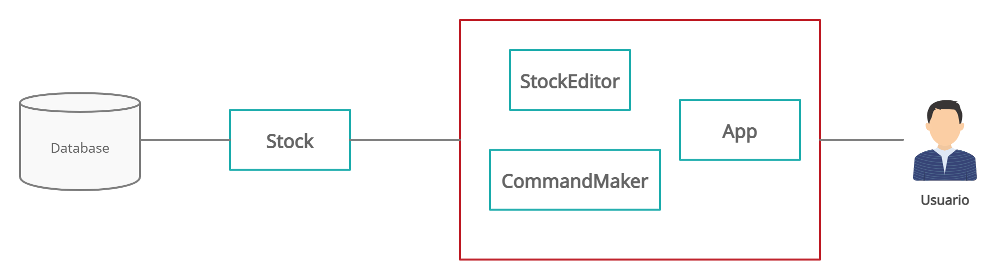

Ver en Github
Tabla de contenidos
-
Objetivos
-
Introducción
-
Foods
-
Plates
-
Menú
-
Carta
-
Command
-
Stock
-
StockEditor
-
Parser
-
CommandMaker
-
App
Objetivos
- Desarrollar un modelo de datos con programación orientada a objetos.
- Aprender a utilizar los módulos
inquirerjsylowdb. - Emplear los issues de Github en el repositorio para dudas, tareas..
- Incluir la documentación al proyecto mediante TypeDoc.
- Adoptar una metodología de desarrollo dirigido por pruebas.
- Utilizar Coveralls como herramienta de cubrimiento de código.
- Utilizar y comprobar Github Workflows: Coveralls y testing mediante Mocha y Chai.
- Tratar de respetar los principios SOLID de diseño orientado a objetos.
Introducción
En esta práctica desarrollaremos el modelo de datos que permite el diseño de un sistema de menús para un restaurante. Utilizando el lenguaje TypeScript y diversos módulos como inquirer, lowdb, clone, etc... Crearemos una aplicación interactiva que permita gestionar alimentos, platos, menús y cartas de un restaurante.

Foods
En este apartado abordaremos las clases y detalles referentes al manejo y representación de los alimentos dentro de nuestra aplicación.
Para representar los alimentos hemos creado una jerarquía de clases que tiene como padre la clase abstracta BasicFood. Esta clase define los atributos comunes a todos los alimentos: nombre, origen, precio por kilogramo y macronutrientes (cantidad en gramos por cada 100g del alimento); así como los métodos también comunes a todos los alimentos: setters y getters de los atributos. Todos los atributos se definen como protected para permitir el acceso a las clases hijas sin necesidad de recurrir a los setters y getters.
Nota: Se define un método abstracto llamado getType que se encarga de retornar un dato de tipo FoodGroup. Este tipo de datos representa los grupos a los que puede pertenecer un alimento: Carnes, pescados, huevos, tofu, frutos secos, semillas y legumbres, Verduras y hortalizas, Leche y derivados, Cereales, Frutas
Una vez definida BasicFood, pasamos a desarrollar las clases que la extienden, es decir, aquellos grupos específicos de alimentos, quedando una estructura como esta:

Macronutrients
Esta clase define los atributos que conformarán los macronutrientes de un alimento: lípidos, carbohidratos y proteínas. A pesar de que no tiene ningún método, hemos optado por que sea una clase en vez de una interfaz para positibilitar la creación de la misma con valores por defecto.

Plates
Una vez tenemos las clases que se encargan de representa los alimentos pasaremos a desarrollar las que representarán los platos del restaurante.
Nota: un plato puede ser de uno de cuatro tipos: entrante, primer plato, segundo plato o postre
Inicialmente consideramos que un plato estuviese formado por un conjunto de instancias de BasicFood. Sin embargo, de esta forma, para calcular valores que dependen de la cantidad presente de ese alimento (composición nutricional, precio) sería necesario incluir el atributo quantity y los métodos correspondientes a la clase BasicFood o a la clase BasicPlate, lo que rompería el principio Single responsability, por ellos decidimos desarrollar una nueva clase llamada Ingredient que almacena un alimento junto a su cantidad en gramos y se encarga de calcular su composición nutricional y precio.
Así, un objeto de la clase BasicPlate almacenaría un nombre, un conjunto de elementos Ingredient y su composición nutricional (Macronutrients), que es calculada en el constructor.
Luego, añadimos las clases que implementan cada uno de los tipos de plato:

Menu
El siguiente paso es desarrollar la clase que representará un menú del restaurante. Un menú estará formado por un nombre y conjunto de platos.
Validación de platos
En principio, un menú debe estar formado por no más de 4 platos, o al menos 3 tipos diferentes. Por esta razón, la clase Menu implementa un método validatePlates que recibe un conjunto de platos y devuelve un booleano indicando la validez del conjunto.
Al constructor se le pasa además un booleano que indica si se quiere validar el conjunto de platos que se le está pasando. En caso de que sea verdadero se validarán los platos que se están pasando al constructor, y si el conjunto es inválido lanzará un error.
Dispone de un método por cada tipo de plato para obtener un subconjunto específico, por ejemplo getFirstPlates y también un getPlates que devuelve todos los platos en orden de aparición (entrantes, primeros platos, segundos platos y postres).
Se puede acceder también al precio del menú y a la composición nutricional del mismo. Estos dos valores se calculan sumando los respectivos valores de cada uno de los platos.
Nota: En realidad el precio representaría el coste del menú, es decir, lo que cuesta cada uno de los platos
Además, se puede añadir y eliminar platos con addPlate() y removePlate() respectivamente.
Por último, podemos listar los grupos de alimentos del plato, con listFoodGroup.

Carta
La clase Carta consta de un conjunto de Menús y un conjunto de platos individuales. Consideramos que el conjunto de platos individuales tiene siempre (como mínimo) todos los platos presentes en los menús de la carta, de modo que un usuario pueda pedir un plato de cualquiera de ellos. Esto lo hacemos mediante la comprobación de que no haya dos platos con igual nombre e igual tipo en el conjunto de platos individuales en el método addPlate. Además, cada vez que se añade un menú, se añaden todos sus platos al conjunto de platos individuales.
- La clase
Cartadispone de tres atributos, un identificador,nombre, un conjunto de menús,menus, ysinglePlates, que constituye un conjunto de platos individuales.

Command
La clase Command tiene como función principal almacenar la comanda de un cliente. En este punto nos encontramos con una situación similar a la de los alimentos y los ingredientes: en una comanda debemos almacenar un plato y la cantidad del mismo. Por ello, se ha definido una subclase adicional:
- CommandOrder
Esta clase tiene como objetivo el establecer la cantidad de un plato que que desee el cliente, para ello mediante su constructor se inicializan sus atributos privados
order: BasicPlateyquantity: number, mediante los cuales podremos establecer el número de instancias de un determinado plato.
De esta forma, Command almacenará un conjunto de CommandOrders

Stock
Esta clase representa el inventario del restaurante, por lo que interactúa directamente con la base de datos del sistema (implementada con lowdb). Cuenta con atributos para almacenar alimentos, platos, menús y cartas además de la base de datos en cuestión database: lowdb.LowdbSync<StockScheme> y un parse: Parser, que define los métodos que se encargan de transformar los datos de la base de datos (en formato JSON) a objetos de nuestra implementación y viceversa. En el constructor de esta clase se inicializa la base de datos mediante el uso del método setDatabase(databaseName: string) el cual hace uso del módulo lowdb para inicializar la base de datos en una determinada ruta y cargar y guardar en ella los datos correspondientes a los diversos productos.
Por cada tipo de producto, es decir, Food, Plate, Menu y Carta se han desarrollado los siguientes métodos necesarios para interactuar con la base de datos(Es en este punto donde se ha hecho uso de Lowdb):
loadTipoProducto()--> Método encargado de cargar desde la base de datos los productos.getTipoProducto()--> Getter para obtener lo que hay de ese tipo de producto en el inventario.searchTipoProductoByname(name: string)--> Buscar en el inventario un producto por su nombre.deleteTipoProducto(TipoProductoName: string)--> Eliminar del inventario (y la base de datos) un determinado producto.addTipoProducto(newTipoProducto: TipoProducto)--> Añadir un producto al inventario (y a la base de datos).storeTipoProducto()--> Guarda los productos de TipoProducto actuales en la base de datos.

JsonObjects
Hemos creado un conjunto de alias de tipos que representan la información de cada objeto de nuestras clases en formato JSON, para así poder guardar cada instancia en nuestra base de datos, por ejemplo:
export type JsonFood = {
name: string,
origin: string,
price :number,
macronutrients :Macronutrients,
type :FoodGroup
};
StockEditor
Esta clase hace de intermediaria entre el usuario y el inventario, de modo que el usuario pueda editar el inventario de manera cómoda y rápida. Para ello, hace uso pincipalmente del módulo inquirer, que ofrece herramientas para gestionar la entrada de datos mediante consolas interactivas.
Es aquí donde entran en juego las Interfaces que hemos definido: FoodsHolder, PlatesHolder, CartasHolder, IngredientsHolder, MenusHolder, Nameable, OriginHolder, PriceByKgHolder.
Dado que las opciones de edición son similares entre sí, por ejemplo: queremos poder añadir un plato tanto a un Menú como al Stock o a una Carta, hemos creado las interfaces para definir métodos que se encarguen de aprovechar estas similitudes.
En el caso de PlatesHolder, el método de StockEditor promptNewPlatesFor, recibe como argumento un objeto que implementa la interfaz PlatesHolder y se encarga de mostrar las opciones al usuario para porder crear un nuevo plato y añadirlo al objeto que se le pasa por parámetro. De esta forma, reutilizamos varios de los métodos de la clase y hacemos más fácil el expandir las funcionalidades del código.
En resumen, esta clase ofrece una serie de menús al usuario con los cuales poder editar el inventario.
Parser
Como se mencionó anteriormente, esta clase define los métodos que se encargan de transformar las instancias de las clases a objetos JSON que puedan ser guardados en la base de datos y viceversa.
Es importante recalcar que, por defecto, el método ParseMenu, que recibe un JsonMenu y devuelve un objeto Menu a partir de él, tiene la opción de validación de platos desactivada por defecto debido a que al editar un menú y guardarlo en la base de datos es posible que el usuario desee guardarlo con un conjunto no válido de platos, pero al cargar de nuevo ese menú lanzaría un error debido a la invalidez del menú editado anteriormente. Por lo que los platos son validados solo cuando el menú es creado desde la aplicación y no cuando se edita o se carga de la base de datos.
CommandMaker
De forma silimar a StockEditor, esta clase actúa de intermediaria entre Stock y el usuario para ofrecer a este último una serie de menús para crear una Command que contendrá los platos seleccionados por el usuario.
App
Por último se encuentra la clase App, esta tiene como atributos un elemento Stock, uno StockEditor y uno CommandMaker
Esta clase representa el mas alto nivel de nuestro proyecto, inicializando nuestra base de datos (stock), y dando un método promptMainMenu(), el cual mediante el uso de inquirer nos permite seleccionar desde la consola tareas como editar el inventario o generar una comanda. Dicha clase interactúa con el usuario y con las clases StockEditor y CommandMaker.